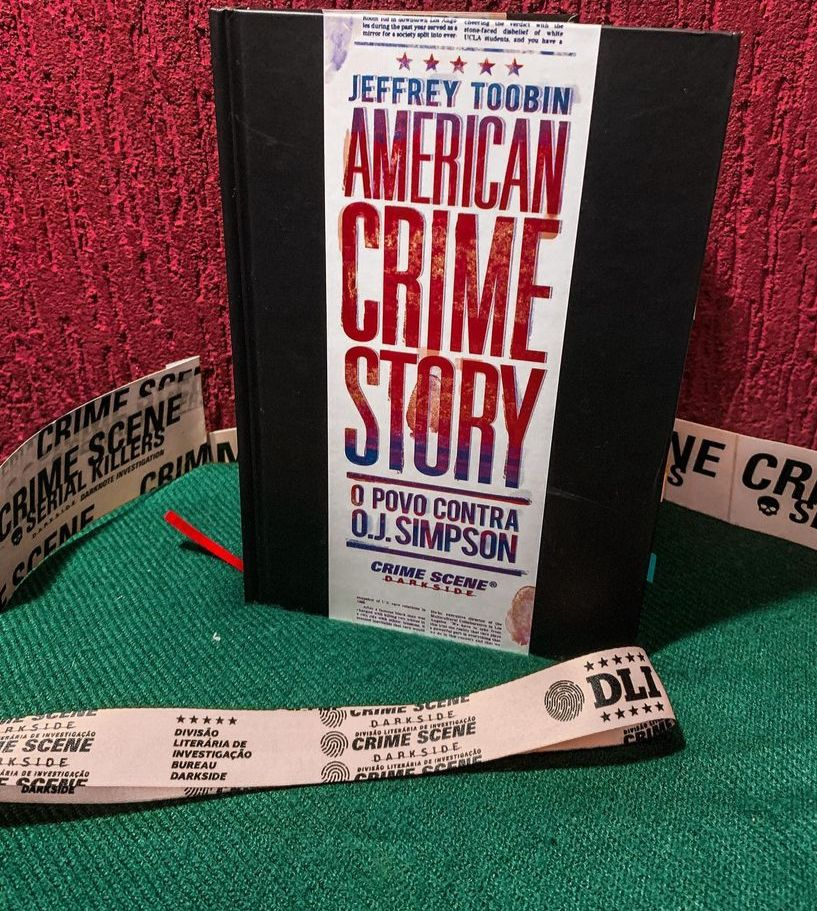

American Crime Story: O Povo Contra O. J. Simpson
(Jeffrey Toobin - Darkside)
⭐⭐⭐⭐⭐
⚠️Gatilhos: Violência doméstica e morte .
Acredito que a maioria conheça O.J. Simpson, Craque recordista da NFL, a liga de futebol americano, o ídolo O.J. estava acima do bem e do mal… até um crime brutal: O assassinato de sua ex mulher Nicole Brown e de seu amigo Ronald Goldman. O POVO CONTRA O.J. SIMPSON é o mais completo livro sobre o caso, e foi escrito por Jeffrey Toobin, repórter que cobriu o julgamento para a revista New Yorker. Mesmo partindo do princípio que Simpson era culpado, o livro apresenta informações minuciosas que ajudam a desvendar por que O.J. foi inocentado naquele grande circo que virou seu julgamento.E que julgamento! Os autos totalizaram mais de 50 mil páginas e 1 milhão de linhas escritas. Durante 372 dias, foram ouvidas 133 testemunhas. Tudo isso está registrado em AMERICAN CRIME STORY: O POVO CONTRA O.J. SIMPSON. Um gigantesco evento da mídia global, acompanhado por mais de 20 milhões de espectadores – recorde superior à chegada do homem à Lua –, aquele foi um dos primeiros casos de tribunal a utilizar a moderna ciência forense como parte das evidências.
O livro de Jeffrey Toobin deu origem a série de sucesso da Netflix : “AMERICAN CRIME STORY: O POVO CONTRA O.J. SIMPSON” e devo dizer que, se você assistiu a série ou conhece superficialmente a história do “Julgamento do Século”, precisa ler este livro.
Violência doméstica, ciúme excessivo, relacionamento tóxico, dinheiro, poder e fama fazem parte da trama!
É uma obra tão completa, que vai abordar todos os lados da história: o crime, o circo midiático, investigação e julgamento. Aqui você vai conhecer a verdadeira face de O.J e como as vítimas foram esquecidas em detrimento de um julgamento polêmico e uma boa defesa, ao estilo “how to get away with a murderer”.
A narrativa é envolvente e assertiva fazendo com que ainda que você saiba o desfecho não dá pra se desligar da obra, você sente cada emoção, cada percalço e se indigna muito.
Gosta de casos reais ? Casos midiáticos? Quer saber toda história por trás do grande ídolo americano ? Então, você achou o livro certo!